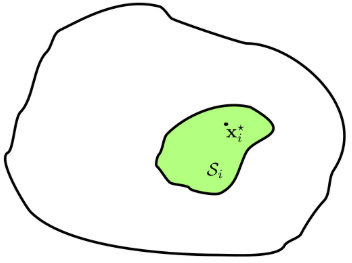
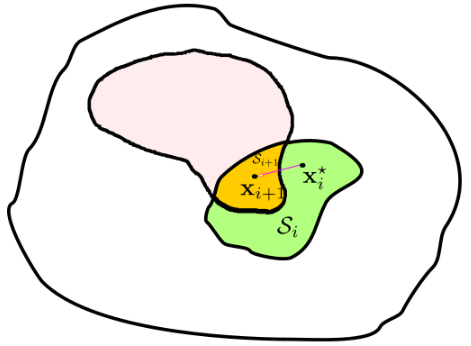

If the task is an equality one like the forward model, the problem can be formulated as: Minimise the norm squared of the task vector within a solution set.
The solution set aims to solve the problem of minimising the task matrix $A$ (equivalent to Jacobian) times the task variables $x$ (equivalent to joint velocities) and the task vector $b$ (cartesian task $v$). The solution would be within the green blob.
$$
\min_{\dot{q}} \quad \|v - J\dot{q}\|^2
$$
The above diff IK equation can be formulated into the notation of solution sets:
$$\begin{align}
\min_{x \in S_i} \quad & \frac{1}{2} ||x||^2 \nonumber \\
S_i = \quad & arg \min_x {\frac{1}{2} \, ||A_ix - b_i||^2} \label{eq:solSet}
\end{align}$$
Solving the single task problem will yield a solution, vector $x^*$, within the green solution set.

Scope
Equality tasks only consider tasks of the form $Ax = b$. It could be the forward model of the differential forward kinematics, $V = J \dot{q}$. It could also be a constraint of the form $Ax = b$. QP solvers allow specification of equality constraints.
Tasks of the form $Cx \leq D$ is not considered. Consider that the aim/output of the diff IK algorithm is set to avoid joint limits as a task. The issue with this is that the null space is null since an equality task is specified for every joint. If this is specified as the top priority task, then the algorithm won't consider any other tasks. The robot will just avoid joint limits forever.
If the task is specified as a lower priority one, there is the risk that a higher priority task will force the algorithm into a joint limit. This is the problem usually seen when trying to solve joint limits as the $q_0$ task - the limits can only be avoided if it is not conflicting with the main task $v$.
$$
\dot{q}^* = J^\dagger \, v + (I - JJ^\dagger) \, q_0
$$
Here, the assumption is made that the priority of tasks are known apriori. There are interesting works on dynamically swapping priorities depending on some higher level application.
Rewrite
\ref{eq:solSet} can be rewritten as the left pseudo inverse of $A$ times the task vector, plus the projection $P$ into the null space and some null space vector.
$$\begin{align*}
S_i &= \underbrace{A^{\dagger}_i \, b_i}_{\text{Particular} \atop \text{component}} +
\underbrace{P_i \, z_i}_{\text{Homogeneous} \atop \text{component}} \\
&= x^*_i + P_i \, z_i
\end{align*}$$
This is equivalent to the homogeneous solution:
$$
\dot{q}^* = J^\dagger \, v + (I - JJ^\dagger) \, q_0
$$
This helps describe any point within the solution set - the particular solution is $x^*$ and the projection into null space helps nicely describe any point within the solution set.
Examples
Reach a ball or
Move an arm to a certain pose or
Follow a tele-operator's commands
In all these cases, the diff IK problem can be mapped into solution sets.
Hierarchy
Given a task $i$ with a solution set $S_i$, consider a task $i+1$ of lower priority. E.g., An arm needs to reach a ball, but it's elbow needs to stay above a certain plane. Keeping the elbow above the plane is less important than reaching the ball. So, the aim is to achieve the 2 tasks as much as possible within the least squares sense.
$$\begin{equation}
S_{i+1} = \quad arg \min_x \left\{\frac{1}{2} \, ||A_{i+1}x - b_{i+1}||^2\right\} \label{eq:lowerPriority}
\end{equation}$$
The insight to solve a hierarchy of equality tasks is that the solution set $S_{i+1}$ needs to be constrained to live within the null space of the higher priority task $P_i \, z_i$. The solution of the lower priority task should never affect the result of the higher priority task.
Closed form solution
Hierarchy of equality tasks has a closed form solution.
$$
x^*_{i+1} = x^*_i + (A_{i+1} \, P_i)^\dagger + (b_{i+1} - A_{i+1} \, x^*_i)
$$
The solution $x^*_{i+1}$, including the hierarchy up to the level of $i+1$, is built recursively from the previous solution $x^*_i$ plus a projection $(A_{i+1} \, P_i)$ of the task $b_{i+1}$ at level $i+1$, discounting the effect of the higher order tasks $A_{i+1} \, x^*_i$.
Inserting $x^*_{i+1}$ into the $x$ of \ref{eq:lowerPriority} and expanding will give the equation more clarity.
The null space projector of the higher priority task $P_i$ within the solution equation of the lower priority task helps guarantee that the solution $x^*_{i+1}$ will fully solve the solution above $x^*_i$ or it will not solve it any more worse than the solution that is already obtained. It will only add components that will solve the next task as well as possible in the least squares sense without having a conflict.
This solution is analytical, recursive. The equation can just be used. There is no need for a QP solver. The results will be good as long as there are no inequalities.
Visualisation
Consider a solution set of a lower priority task $i+1$ represented by the orange blob, if it were not constrained. The green blob represents the solution set of the higher priority task $i$.

The equation guarantees a solution within the intersection of the solution sets, if the sets intersect. If the sets did not intersect, the equation would give the closest point in the green set to the orange set, in a least squares sense.
Rewrite as a constraint
If the solution set for a single task can be described as a particular solution along with a homogeneous component (null space projection and the vector of a task in the null space), it can also be specified as a constraint.
$$\begin{align*}
S_i &= x^*_i + P_i \, z_i \\
&= {x \in \mathcal{R}^n : A_i x = A_i x^*_i}
\end{align*}$$
$z_i$ will now operate under the constraint $A_i x = A_i x^*_i$. So, all the solutions for the task vector $x$, when plugged into the LHS, has to obey the equality to the RHS. This locks the obtained solution set for task $i$ which can be used in the next level and cannot be modified by the next level priority task.
Instead of the analytical solution, if the desire was to write the equality tasks as a sequence of QPs, the above constraint would have to be specified for every task $i+1$ and fed into a QP solver which would then return the same analytical solution.